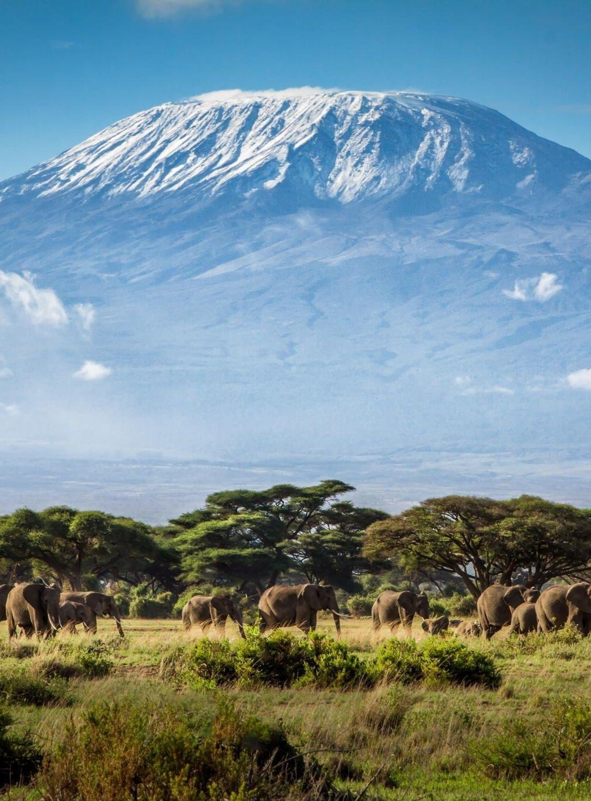
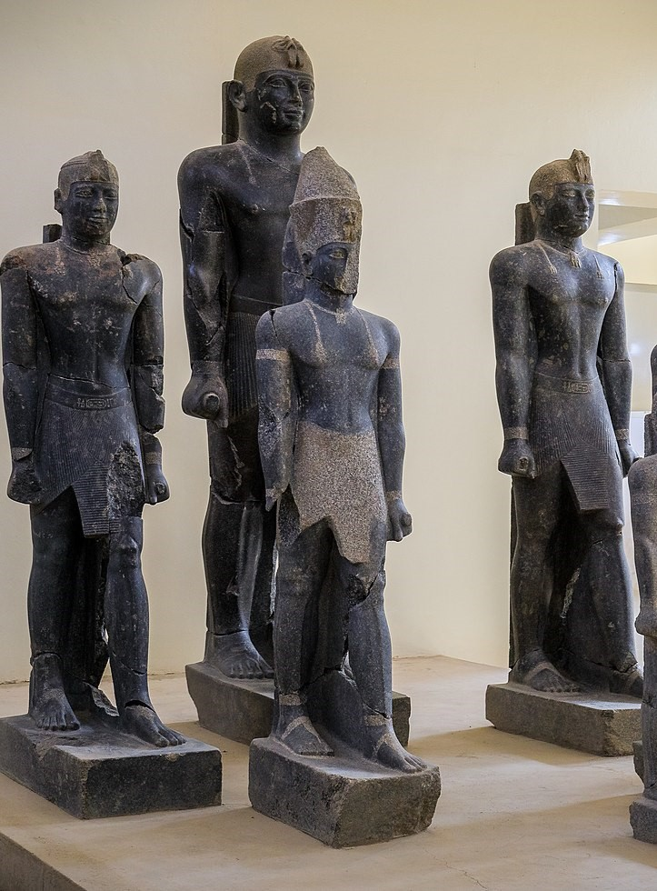
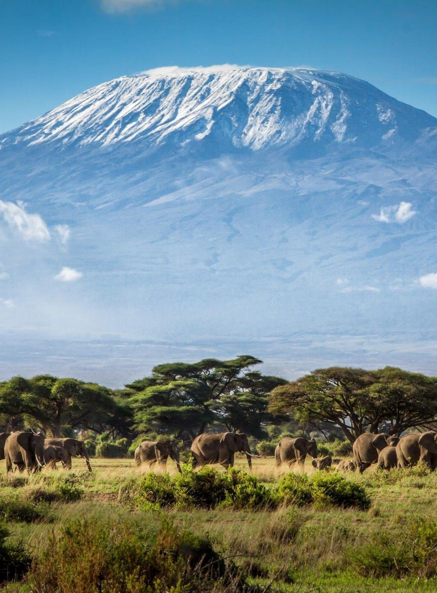
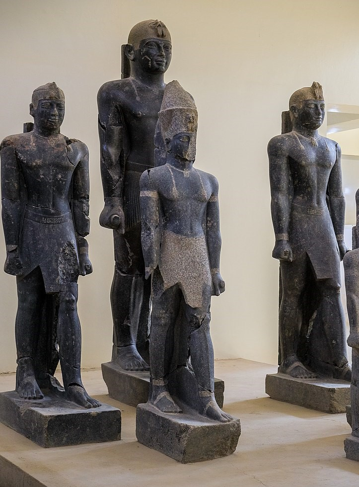

Table of Contents
The orginal alphabets such as Heiroglyphs and Hebrew did not have vowels, vowels are ambigous and vary in pronunciation. This is a contributing reason why using the Latin alphabet for indigenous languages results in variations of spelling for the same words. It is because the letters no longer correspond to unique individual sounds, "J" for example did not exist more than 500 years ago, the Chitas were from Judah before they removed the Djed𓊽 The following table of contents provides a vowel-less heiroglyph perspective to reveal the true story


 


